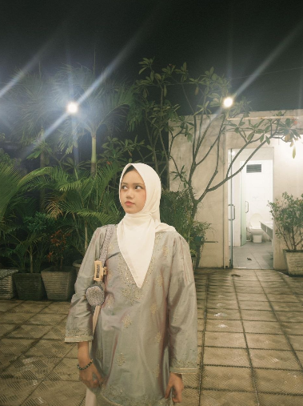

Karya Nyata dari Proses Belajar

Halo semuanya perkenalkan nama aku Azkayra Adreena Hanifah. Aku bersekolah di SMPIT Al Haraki Depok. Aku lahir pada tanggal 12 Juni 2011 di Jakarta dan saat ini berusia 15 tahun. Aku adalah anak ketiga dari tiga bersaudara, aku mempunyai seorang kakak sebagai yang tertua dan seorang abang sebagai anak kedua dan mereka berdua berkuliah di kampus Universitas Indonesia. Tujuan aku bersekolah di sini adalah untuk menambah ilmu, mengembangkan kemampuan diri, meningkatkan kepercayaan diri.
Aku biasanya dipanggil kayra, kalau kata banyak orang aku itu adalah orang yang mudah berteman tetapi juga tidak bisa mengobrol terlalu lama bersama orang yang tidak dekat, entah kenapa aku mudah merasa capai. Aku sangat menyukai musik dan cheesecake aku juga terkadang mengisi waktu luang dengan bermain gitar. Hal yang tidak aku sukai adalah serangga dan juga keramaian. Aku juga mempunyai ketakutan terhadap ketinggian.
Aku memiliki hobi untuk bermain gitar juga menonton film dan aku memiliki minat mempelajari bahasa korea
Cita cita aku adalah menjadi dokter hewan karena aku sangat menyukai hewan terutama mamalia dan harapanku untuk kedepannya dalah menjadi seorang pelajar yang giat belajar, meraih banyak prestasi, masuk ke kampus impian dan dapat membanggakan orangtua.
Kesan aku selama belajar di kelas IX SMPIT Al Haraki sangat menyenangkan dan penuh pengalaman. Aku mendapatkan banyak ilmu dan teman-teman yang baik. Pesan aku, semoga SMPIT Al Haraki semakin maju dan terus memberikan yang terbaik. Terima kasih kepada guru-guru yang telah membimbing aku.